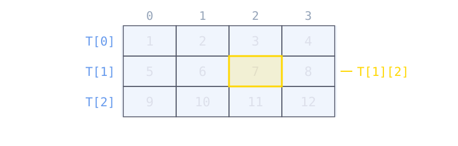
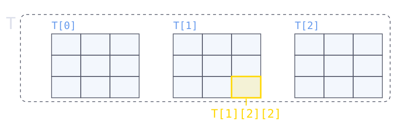
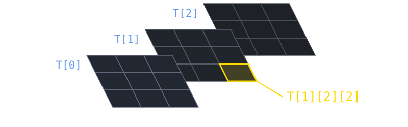

Cours 5
Les éléments d’une liste peuvent être de n’importe quel type ; en particulier, ils peuvent être à leur tour des listes.
M[i] est la sous-liste d’indice i, et M[i][j] est l’élément d’indice j de cette sous-liste.for imbriquées : la première parcourt les sous-listes, la seconde les éléments de chacune d’elles.Une liste de listes est la façon naturelle de représenter un tableau : une liste de m lignes, chacune étant une liste de n éléments.
T[i] est la ligne d’indice i, qui est elle-même une liste ;T[i][j] est l’élément de la ligne i et de la colonne j.
Attention. Rien n’oblige les lignes à avoir la même longueur : c’est à nous de garantir que notre liste de listes est bien un tableau.
Rien n’empêche d’aller plus loin : si les éléments de chaque ligne sont eux-mêmes des listes, on obtient un tableau à trois dimensions, c’est-à-dire une liste de tableaux.


T[k] est un tableau entier, T[k][i] une de ses lignes, et T[k][i][j] un de ses éléments.for imbriquées pour parcourir tous les éléments.Nous avons vu que certaines structures en Python sont indexables, c’est-à-dire qu’on peut accéder à l’une de leurs valeurs en les indexant avec un nombre :
Cependant, il pourrait être très utile d’avoir une structure qui puisse être indexée par des objets qui ne sont pas des nombres. Une telle structure existe en Python : il s’agit des dictionnaires.
dict) est une structure de données qui permet d’indexer des objets (les valeurs) non pas avec des entiers 0, 1, 2, … mais avec des clés.clé: valeur, écrit entre accolades.On peut créer un dictionnaire
d = {} ;d = {clé_1: valeur_1, ..., clé_n: valeur_n}.Les clés peuvent être n’importe quel objet non mutable : int, float, str, bool, tuple… mais pas une liste. Elles doivent également être uniques : si la même clé apparaît plusieurs fois, seule la dernière paire est gardée.
Remarque. Comme les listes, les dictionnaires sont mutables : on peut les remplir et les modifier après leur création.
On accède à l’élément de clé clé du dictionnaire d avec la syntaxe d[clé], à condition qu’un tel élément existe. Sinon, Python produit une erreur.
Pour éviter l’erreur, on peut exécuter l’instruction d.get(clé) : la méthode get de la classe dict retourne l’élément de clé clé si un tel élément existe, et retourne None autrement.
Insérer ou modifier : d[clé] = valeur insère une nouvelle paire (clé, valeur) si la clé n’existe pas, ou modifie la valeur associée si elle existe déjà.
Supprimer : del d[clé] supprime l’élément de clé clé, et produit une erreur si celle-ci n’existe pas.
Appartenance : clé in d vérifie si la clé existe dans le dictionnaire d.
Remarque. Il n’y a donc pas de méthode append pour les dictionnaires : une simple affectation suffit à ajouter une paire.
Un dictionnaire est un objet itérable. On peut itérer sur ses clés avec une boucle for.
Parcourir les clés d’un dictionnaire nous donne accès également aux valeurs associées, puisque la valeur associée à clé est d[clé].
On peut parcourir un dictionnaire d de différentes manières avec les méthodes :
d.keys() : itère sur les clés ;d.values() : itère sur les valeurs ;d.items() : itère sur les paires (clé, valeur), sous forme de tuples.Remarque. Les objets retournés par keys, values et items sont des objets à part entière (appelés vues), mais ils sont peu utilisés en dehors des boucles for.
On peut créer une liste ou un dictionnaire de manière concise en utilisant la compréhension. Les syntaxes sont :
[exp(var) for var in iter] {clé: valeur for var in iter}
où var est une variable, exp(var) est une expression qui peut (ou peut ne pas) contenir var, et iter est un objet itérable.
Remarque. Les compréhensions peuvent être plus sophistiquées (conditions, boucles multiples, etc.). Voir cette page pour plus de détails.
Deux paires d’entiers (a, b) et (c, d) sont dites équivalentes lorsque a et c ont le même reste dans la division par 3, et b et d le même reste dans la division par 5.
Écrivons une fonction grouper_paires qui prend une liste de paires et retourne un dictionnaire regroupant ensemble les paires équivalentes.
a % 3 et b % 5 déterminent à eux seuls le groupe d’une paire : le tuple (a % 3, b % 5) est donc une clé toute trouvée, et c’est bien un objet non mutable.